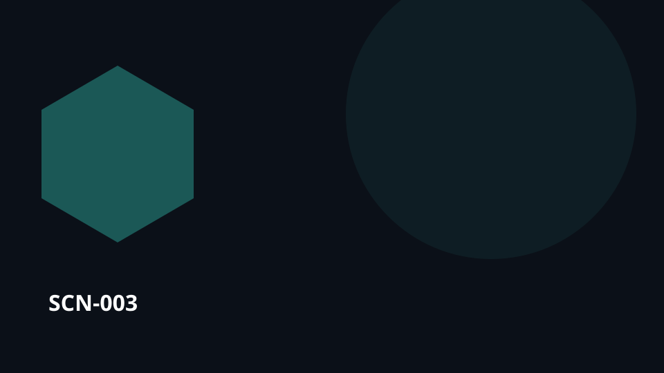

SCN-003 · Find & Understand
A geopolitical analyst compares conflicting narratives
A geopolitical analyst compares contradictory accounts. The situation starts with incomplete or scattered evidence. Koali keeps observations, sources, history and relevant expertise connected around the same question, so understanding can develop without losing provenance or the link to what happens next.

SCN-003 — A geopolitical analyst compares conflicting narratives
Universal pattern — Connect sources, history, versions, and relationships so people can see where a belief or claim comes from.
Pattern family — PAT-02 Reconstruct context and provenance
Situation
A geopolitical analyst compares conflicting narratives. Several traces, sources, versions, or accounts must be connected without erasing uncertainty or disagreement.
What is usually lost
Context, sources, and hypotheses scatter before a usable understanding can form.
With Koali
Kristal keeps the relevant knowledge objects, sources, history, relationships, versions, and evidence connected. Konnaxion lets the relevant people discover one another, contribute context, learn, discuss, or co-create around those same objects. Orgo turns the resulting need, decision, or intervention into routed work with responsibilities, dependencies, evidence, and closure.
Loop
sources → provenance → concepts → contradictions → hypotheses → briefing
Usage palette
find · understand · collaborate · verify
Component roles in this scenario
- Kristal ●●●●● — keeps the knowledge, provenance, relationships, and memory needed to understand the situation.
- Konnaxion ●●●○○ — connects the people who can add, challenge, teach, learn, or interpret the shared context.
- Orgo ●○○○○ — takes over when a check, decision, request, or intervention must become tracked work.
What makes this characteristically Koali
The value is not any one isolated feature. It is preserving the same context across sources → … → briefing so knowledge, people, choices, work, and memory remain connected.
Transferable to
maintenance · research · cybersecurity
The domain changes; the pattern remains: Connect sources, history, versions, and relationships so people can see where a belief or claim comes from.
Canonical anchoring
Signature patterns: SIG-02, SIG-07
Related possibility references:
POS-KNOW-001POS-LANG-004
These references support the architectural composition of the scenario; they do not by themselves validate the full scenario at runtime.
Status
COMPOSED · runtime UNVERIFIED
This scenario is an editorial use case grounded in the documented capability composition. Do not present it as a proven deployment without additional runtime evidence.